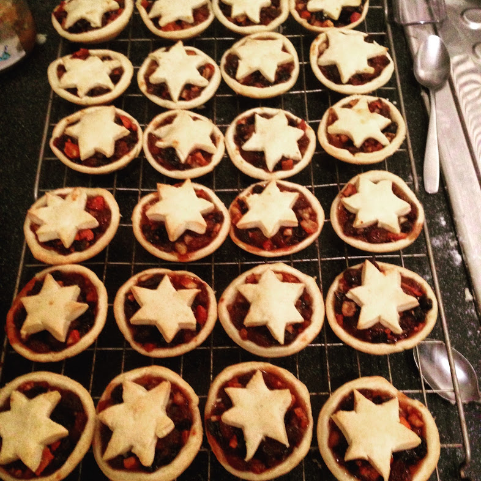

Biscuits 🍪
Basic Cookie Dough
Plain (12)
- 120g butter
- 100g sugar
- 1 egg
- 1/2 tsp vanilla
- 175g plain flour
Beat butter and sugar until fluffy. Beat in egg and vanilla. Mix in flour. Gas 4 10-12 mins until pale golden and slightly soft in the middle.
Peanut butter cookies (14)
- 100g butter
- 75g light muscovado
- 75g caster
- 100g crunchy peanut butter (add with butter and sugar)
- 1 egg
- 1/2 tsp vanilla
- 200g plain flour
- 75g peanuts (half in, half on top)
Fruit and nut (12)
- 75g butter
- 100g light muscovado
- 1 egg
- 50g plain flour
- 25g wholemeal flour
- 1/2tsp cinnamon
- 75g mixed brazils+ cashews
- 75g dried apricots
- 3 tbsp roasted sunflour seeds
- 75g oats
Double choc chunk (14)
- 100g butter
- 100g light muscovado
- 25g caster sugar
- 1 egg
- 1 tsp vanilla
- 150g plain flour
- 1/2tsp baking powder
- 90g oats
- 100g each plain and milk choc (large chunks)
Grasmere Ginger Shortbread
- 150g plain flour
- 150g wholemeal flour (wheat of spelt)
- 50g medium oatmeal
- 1 teaspoon ground ginger
- 1/2 teaspoon bicarb of soda
- 125g light brown muscovado sugar
- 1 lump of stem ginger (from a jar) drained and coursely chopped
- 125g slightly salted butter, chilled and diced
- 1 x 20cm square cake tin
Heat oven to 180*C. Process everything except butter until course crumbs. Add butter and process until light crumbs.
Remove 4 tbsp crumbs. Press rest of crumbs into the tin. Scatter rest loosely on top.
Bake for 25-28 min until light golden.
Cool in tin and cut into fingers
Molasses Cookies
- 180g butter
- 180g muscovado sugar
- 1 egg
- 85g molasses
- 300g flour
- 1/4 tsp salt
- 2 tsp bicarb of soda
- 1/2 tsp cloves
- 1 tsp cinnamon
- 1 tsp ginger
Mix all.
Roll into walnut sized balls and dip in caster sugar
Bake at 190 for 12-15 min.
Muscovado Peanut Cookies
Dan Lepard
- 75g unsalted butter, softened
- 50g crunchy peanut butter
- 225g muscovado or dark molasses sugar
- 1 good tbsp black treacle or molasses
- Finely grated zest of 1 lemon
- 1 large egg
- 200g plain flour
- 1 tbsp cocoa
- 1 tsp bicarbonate of soda
- 175g salted peanuts
In a large mixing bowl, beat together the butter, peanut butter, sugar, treacle and lemon until smooth. Add the egg and beat in really well. Add the flour, cocoa and soda, mix until the soft dough is smooth, then stir in the peanuts.
Heat the oven to 180C and line a baking tray with foil or nonstick paper. Place round, teaspoon-sized balls of the dough on to the tray, spaced 5cm apart, and bake for 12-14 minutes, until puffed. Remove the tray from the oven and leave for five minutes to set slightly, then use a spatula to move the cookies to a wire rack or cold plate to cool.
One A Day Cookies
Dan Lepard
- 125g unsalted butter, softened
- 100g (80) caster sugar
- 100g (80) soft muscovado sugar
- 1 large egg
- 1 tsp vanilla extract
- 100g wholemeal flour (bread flour ok)
- 150g lightly toasted seeds (pumpkin, sunflower and linseed. More sunflower than others)
- 100g good-quality rolled oats (not the stuff that resembles sawdust)
Toast seeds in a tray in the oven for about 8 minutes.
Preheat the oven to 180C/360F/gas mark 5½. Beat together the butter and the two sugars, then add the egg and beat to combine. Stir in the vanilla, then lightly beat in the other ingredients.
Divide the mixture into 12-14 pieces (they should be roughly the size of a golf ball) and then flatten them a little with the palm of your hand as you lay out six pieces on a greased baking sheet. (You bake only six at a time because they cookies will spread out to twice their original diameter.)
Bake in the preheated oven for 10-12 minutes, or until the cookies are lightly brown at the edges.
Remove from the oven, leave to cool for a minute, then, using a spatula, carefully lift and transfer them to a cooling rack. Once cold, store in a paper bag or an airtight container.
Mum’s mince pie pastry
- 175g margarine
- 250g self raising flour
- 2 tbsp water
Mix with fork and half the flour. The add rest with water.
Gas 5 for 20min.

Scones
- 225g Self raising flour
- 25g sugar
- 55g butter
- 1 egg
- 4tbsp yoghurt
Bake at 180C for 12-14 minutes